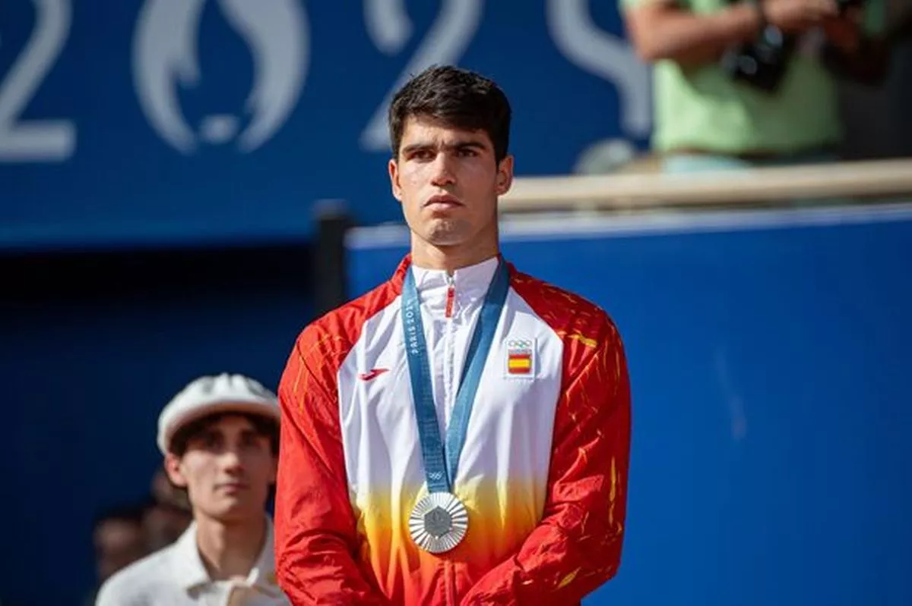
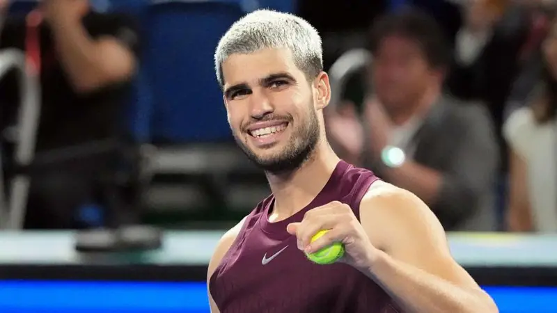
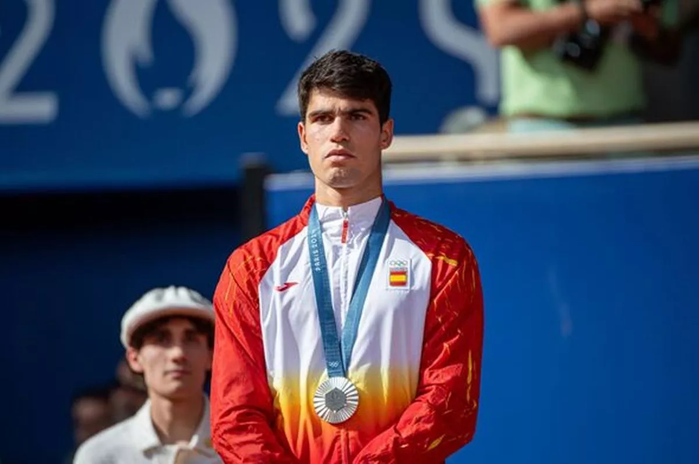
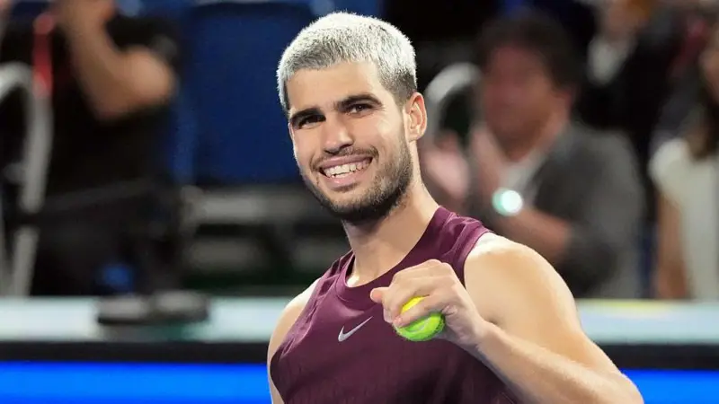

Early Life and Career
Carlos Alcaraz began playing tennis at a young age under the guidance of his father at a local tennis club in Spain. He later trained at the Equelite JC Ferrero Tennis Academy, where he was coached by former world No. 1 Juan Carlos Ferrero. Alcaraz turned professional in 2018 and quickly gained attention for his aggressive playing style and mental toughness.
Carlos's Hit Career
Since turning professional, Carlos Alcaraz has achieved major success on the ATP Tour. He became the youngest player in history to reach the world No. 1 ranking and has won multiple Grand Slam titles. His ability to defeat top-ranked players has established him as a leader of the new generation of tennis stars.
Distinguished Career Achievements
- Australian Open (2026)
- US Open (2022, 2025)
- French Open (2024, 2025)
- Wimbledon (2023, 2024)
- Indian Wells Masters Championship (2023, 2024)
- Olympic silver medalist (2024)
Media Craze Surrounding Carlos's Success
- Youngest man to win a Grand Slam on all three surfaces (clay, grass, hard) by 2025
- Held the World No. 1 ranking multiple times, becoming the youngest ever in 2022
- Face of the new generation of tennis
- Seen as the “Big Three” era breaker
- Unbelievable comeback in the French Open 2025 final against Jannik Sinner, where Carlos saved multiple championship points
Gallery
 


